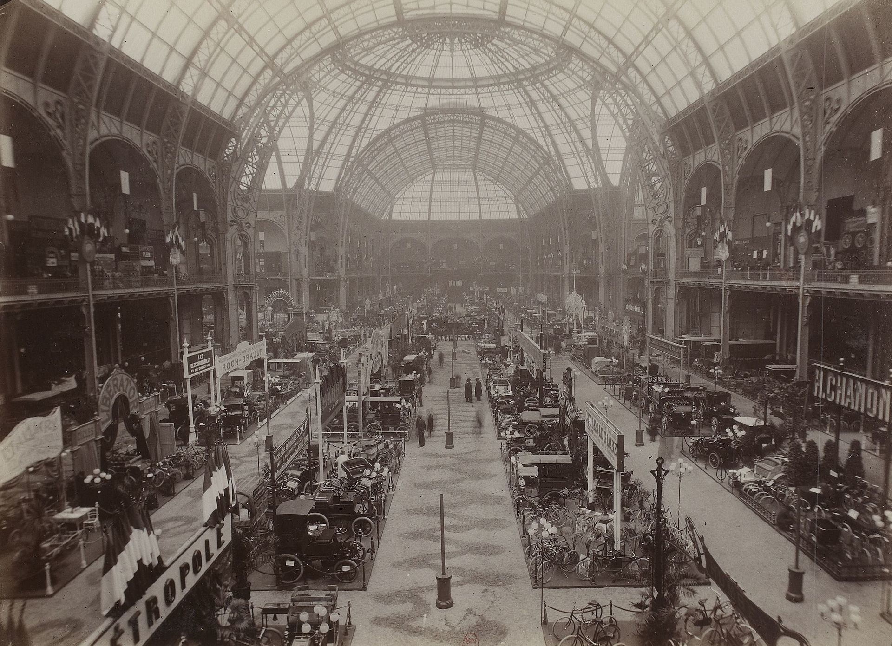

Histoire du Mondial de L'automobile
En décembre 1896, le quatrième Salon du cycle de Paris, localisé au Palais de l'Industrie et présidé par le comte Jules-Albert de Dion, consacre une section aux automobiles françaises.
En juin 1898, le Jardin des Tuileries reçoit à l'initiative de l'Automobile Club de France la première « Exposition Internationale d'Automobiles » réalisée dans le monde. Pour pouvoir être exposées au salon, les automobiles doivent au préalable parcourir la distance Paris-Versailles-Paris, soit une distance d'une quarantaine de kilomètres, de manière à prouver leur capacité à se mouvoir de façon autonome6. Les grandes marques automobile de l'époque telles que Peugeot, Panhard & Levassor, Benz ou Daimler participent au salon7. L'opération remporte un vif succès puisque 140 000 visiteurs viennent découvrir les 232 modèles de voitures exposées. Une seconde exposition est présentée au jardin des Tuileries en juin 1899.
En 1901, pour sa troisième édition, l'organisation prend toute son importance en s'installant au Grand Palais et prend le nom d'Exposition internationale de l'automobile, du cycle et des sports ou le terme « cycle » désigne les bicyclettes, motocyclettes, cyclomoteurs et motos. Des bateaux et des aérostats sont également exposés. En raison de la Première Guerre mondiale, le salon demeure fermé de 1914 à 1918. L'année 1919 signe sa réouverture, avec l'Hispano-Suiza H6 comme automobile phare7. L'automobile est un objet de luxe que l'on expose et qui fait rêver, si bien que le salon attire de plus en plus de visiteurs chaque année. En 1926, l'exposition est renommée « Salon de l'Automobile, du Cycle et des Sports ».
À partir de 1933, le cycle et la moto sont uniquement présents les années paires. En 1937, à nouveau, les organisateurs doivent trouver un autre lieu devant l'engouement des visiteurs et le nombre toujours croissant de modèles présentés, les cycles et motos déménagent dans l'annexe Invalides du Salon, située à l'angle du quai d'Orsay et de la rue Fabert. De 1939 à 1945, le salon fermera ses portes le temps de la Seconde Guerre mondiale. La première édition d'après-guerre ouvre ses portes en 1946 avec une fréquentation record de 810 000 visiteurs sur les 10 jours d'exposition. L'enjeu est alors de faire redémarrer l'économie française.
Le Grand Palais devient trop petit pour pouvoir accueillir à la fois les automobiles, les motos et les cycles. Ainsi en 1949, il est biennal, se déroulant en deux périodes, du 6 au 16 octobre pour les automobiles et du 27 octobre au 6 novembre pour les motos et les cycles. En 1950, les motos et les cycles vont rejoindre les véhicules industriels au parc des expositions de la porte de Versailles11, le salon se déroulant pour la première fois de son histoire sur deux sites distincts dans Paris.
En 1951, le salon change encore de nom pour devenir « Salon de l'automobile, du cycle et du motocycle ». En 1954 le salon de l'automobile franchit pour la première fois 1 million de visiteurs9. sur les 80 000 m2 d'exposition du salon. Depuis 1962 le salon se tient entièrement au parc des expositions de la porte de Versailles, et depuis 1977, il a lieu seulement tous les deux ans, les années paires en alternance avec le Salon du cycle et du motocycle les années impaires. En 1988, le « Salon de l'automobile » s'internationalise et devient le « Mondial de l'Automobile », il se consacre uniquement à l'automobile, tandis qu'en 1993 est créé, sur le même principe, le « Mondial du deux roues ». Le Mondial de l'Automobile se tient dans huit halls du Parc des expos et regroupe des marques automobiles du monde entier, certaines peu connues et d'autres très célèbres ; en 2002, 559 marques étaient présentes.